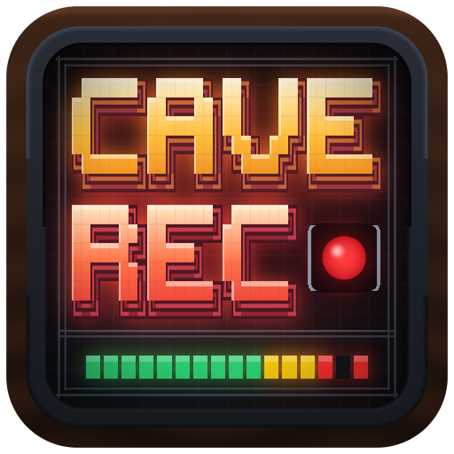
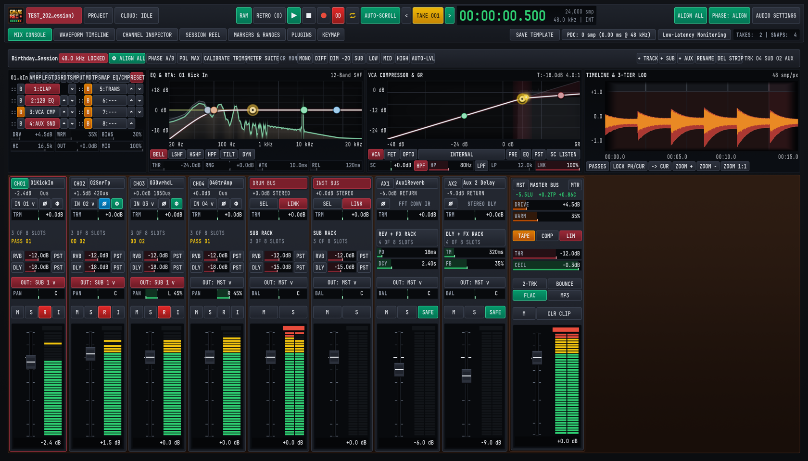

macOS Apple Silicon arm64
Detected for your systemmacOS 13+ (M1/M2/M3/M4) • CoreAudio • Includes Cave Recorder.app, CLI & PDF Manual

╔═══════════════════════════════════════════════════════════════════════════╗ ║ ██████╗ █████╗ ██╗ ██╗███████╗██████╗ ███████╗ ██████╗ ║ ║ ██╔════╝██╔══██╗██║ ██║██╔════╝██╔══██╗██╔════╝██╔════╝ [● REC] ║ ║ ██║ ███████║██║ ██║█████╗ ██████╔╝█████╗ ██║ 30m RAM RING ║ ║ ██║ ██╔══██║╚██╗ ██╔╝██╔══╝ ██╔══██╗██╔══╝ ██║ 48kHz ADAT ║ ║ ╚██████╗██║ ██║ ╚████╔╝ ███████╗██║ ██║███████╗╚██████╗ 32-BIT FLOAT ║ ║ ╚═════╝╚═╝ ╚═╝ ╚═══╝ ╚══════╝╚═╝ ╚═╝╚══════╝ ╚═════╝ ║ ╠═══════════════════════════════════════════════════════════════════════════╣ ║ CH 01-18 [████████████████████░░░░░] -3.2 dBFS │ PHASE: Δ 0.02 ms Ø ║ ╚═══════════════════════════════════════════════════════════════════════════╝
caverec)
A multitrack recorder, curated analog-inspired mixing console, and multicore phase-alignment workstation built for real bands playing together in one room. Every song or jam gets its own independent 00:00:00.000 Take, simultaneous 32-bit float stems + live stereo Print, native AmpRig tube & .nam neural amplifier capture, bleed- & harmonicity-aware dynamics, non-destructive live-take mistake surgery, and optional Google Drive session & mixdown sync.
Rehearsal-Cave Insurance: The drummer inevitably plays the best groove of the year five minutes before anyone remembers to press Record. Cave Recorder keeps a continuous 30-minute rolling RAM ring ready to save the jam after the last cymbal fades.
macOS 13+ (M1/M2/M3/M4) • CoreAudio • Includes Cave Recorder.app, CLI & PDF Manual
Windows 10/11 (64-bit) • WASAPI Exclusive/Shared • Includes caverec.exe & PDF Manual
Linux x86_64 (glibc 2.27+) • ALSA Direct Hardware • Includes caverec & PDF Manual
Modern music production has drifted toward sterile isolation: musicians recorded one at a time to a rigid click track, snapped to a mathematical bar/beat grid, and scrubbed of every pitch and timing micro-variation. That pipeline serves synthetic programmed pop, but it destroys the soul of music that lives in shared eye contact, collective improvisation, natural tempo push-and-pull, and loud amplifiers breathing in the same room.
Historically, capturing a full band live in one room with the punch, separation, and warmth of classic analog records required an isolated control room, a dedicated recording engineer, and two days spent moving microphone stands by millimeters to fight phase cancellation and amplifier buzz. Cave Recorder democratizes that analog-era studio quality for self-recording bands in rehearsal caves, basements, and project studios who want to plug in, play together, and capture lightning in a bottle without technical friction.
Cave Recorder intentionally omits MIDI sequencers, piano rolls, elastic tempo-warping grids, and robotic vocal tuning. Time is measured in real physical seconds, milliseconds, and samples (00:00:00.000) inside independent Takes so your rhythm section's natural tempo fluctuations and live groove breathe unquantized.
When all four band members are holding instruments, nobody is sitting at the desk riding faders. Cave Recorder handles rolling 30-minute RAM capture, one-click -18 dBFS CALIBRATE ALL TRIMS, multicore Polarity & Allpass Phase Maximization, and bleed-frozen VocalRider leveling automatically.
Instead of overwhelming you with 90 overlapping legacy plugins and floating window mazes, Cave Recorder integrates a complete, zero-compromise Native Console & Rack Suite. Every processor opens on an immediate musical sweet spot while exposing deep surgical controls underneath.

Scale your console on the fly from a 2-channel acoustic duo up to 32 mono or stereo-linked tracks, 16 stereo Subgroup Buses, and 8 stereo Aux Returns. Every strip packs a reorderable 8-slot rack (12-band dynamic EQ + Dual-Trace RTA, VCA/FET/Opto compressor, analog tape saturation, Guitar & Bass AmpRig, and external .clap + macOS Audio Unit AUv2/AUv3 plugins with Ghost Slot recovery) plus a Master Bus brickwall limiter and automatic PDC.
A continuous 30-minute rolling RAM ring buffers all armed channels while stopped so you can save a great jam after it happens. Every Take simultaneously records 32-bit float multitrack stems and a live stereo Master Bus Print ready for one-click 24-bit lossless .flac and 320 kbps CBR .mp3 conversion.
ALIGN Φ)
Timing differences between close drum mics, overheads, room mics, and DI/cab pairs hollow out low-end punch. Clicking ALIGN ALL correlates arrival times against your reference mic, applying polarity inversion (Ø) and microsecond sub-sample alignment in one step.
Start tracking immediately with built-in session templates (MicAndGuitar001 and GuitarBassDrumTrio001) plus custom SAVE TEMPLATE studio layouts. Every Take starts at 00:00:00.000 with expandable Pass lanes (Rec001 Base Pass, Rec002-OD Overdub Pass), Present Stash A/B Snapshot recall, one-click EXPORT TAKE interchange (.rpp, .als, Session XML, .dawproject, .fcpxml v1.9, and BWF/iXML/MIDI/IR bundles), and Direct Google Drive sync for sessions plus 24-bit .flac and 320 kbps .mp3 mixes.
Multi-mic arrival delays and ported cabinet phase dispersion steal 6 to 12 dB of low-end punch on drum kits and BassDi + BassAmp pairs. Every channel strip includes a built-in, zero-slot 5-stage allpass PhaseAlignNetwork (10 ms click-free crossfade) alongside sub-sample delay (Φ) and polarity (Ø):
PolarityAuditionStash protection.20 Hz–20 kHz) and fires all CPU cores across Complex Torus SDP relaxation (with live Coherence Efficiency % ceiling), Viterbi DP, Lang-Laakso WLS, and Parallel Tempering with Topological Tunneling Moves (T1, T2a, T2b, T3, T4) to populate loudness-matched Candidates A, B, C, D (A: Pure Ø Zero Dispersion, B: Tight Low-End Lock, C: Deep Multi-Band Allpass, D: Full Wavefront + Allpass) with [GAIN-MATCH AUDITION].AmpRig (.nam Capture) & Context GatesTrack direct guitar/bass or clone your own tube heads and fuzz pedals in the room while context-aware gates keep sustain and clean intros intact:
AmpRig ([CIR] Tube Models & [NAM] Neural Amp Capture): Switch between five 4x-oversampled physical tube preamp/power-amp circuits (AmericanClean, BritishCrunch, ModernHighGain, DoomFuzzStack, StudioBassTube) and open .nam Neural Amp Modeler files (WaveNet, LSTM, Linear) with 6 factory captures, 6 matched speaker cabinets, and a guided 3-step Hardware Amp & Pedal Capture Wizard (CAP) that sweeps, aligns, and trains .nam models (Nano ~15 s, Feather ~35 s, Standard ~90 s) with live ESR telemetry.AmpDynamic & DrumBleed Context Gates: Autocorrelation pitch periodicity (H ∈ [0, 1]) and Wiener spectral flatness keep -34 dBFS fingerpicking (Whisper Clean Lock) and 1.5–5.0 s harmonic feedback swells (Feedback Bloom Lock) open while clamping palm-mute hum in 18–22 ms, alongside differential DrumBleed tom isolation with [LRN] fundamental lock and dynamic decay low-pass filtering.
When a band captures an unrepeatable live groove in Take 001, you should never have to scrap it because one snare hit clipped the preamp ADC, an old amp buzzed at 60 Hz, or someone flubbed a chord in bar 42:
[REPAIR CLIPPING] & 12-Harmonic Hum Canceller: Reconstructs flat-topped ADC converter clips using C2 Quintic Hermite Splines (1–8 smp) and 16th-order Burg Autoregressive Linear Prediction (9–256 smp, 512-smp context), while a 12-harmonic Q = 20–100 (default 60) comb notch array strips 45–65 Hz mains buzz without dulling guitar tone.[PATCH FROM SOURCE...] & [SMOOTH OVER ARTIFACT]: Punch an Overdub Pass into a single phrase ([USE OD 02 IN RANGE]), level a hot solo before the rack with Clip Gain, graft a clean chord from another bar with ±50 ms phase-locked crossfades, or erase a mic stand bump (5–150 ms) via spectral/AR spot-healing.Every channel and Subgroup Bus provides a complete vocal, drum, and instrument sculpting chain with zero internal latency:
B1..B12) activates threshold-driven dynamic attenuation or boost to clamp 165 Hz palm-mute cabinet boom or 3.2 kHz vocal harshness only when it pokes out.VCA / FET / Opto) & Differential TransientShaper: Switch between feed-forward RMS bus glue (VCA), ultra-fast 0.02 ms discrete transistor snap (FET), and program-dependent optical leveling (Opto), plus level-independent attack/sustain transient shaping.VocalRider (with Bleed Freeze), DeEsser & MicroPitchDoubler: Zero-latency ±6 dB vocal leveler that freezes during pauses so drum bleed is never boosted, paired with a 120 Hz dynamic low-shelf Plosive Arrestor, split-band sibilance compressor, and Haas-free stereo pitch doubler.Authentic analog-modeled space, echo, and resonant filter movement built directly into the console without hunting for external stompbox plugins:
Capstan Tape, BBD Analog, Pristine Digital): Saturating magnetic tape echo with wow/flutter, dark 4096-stage bucket-brigade charge-transfer analog delay with compander breathe and clock-linked low-pass filtering (4.8 kHz down to 1.6 kHz), and clean digital delay with built-in Dynamic Ducking.LadderFilter: Classic 12 dB/oct (2P) and 24 dB/oct (4P) transistor ladder (20 Hz–16 kHz) with Class-A drive, sub-bass resonance compensation (Bass Comp), bi-directional dynamic envelope follower (±5 octaves, Fast/Smooth auto-wah), and external kick sidechain.StudioPlateReverb & 4-Mode Modulation: Zero-latency EMT 140 convolution + 8-line Hadamard FDN plate reverb, alongside ThroughZeroFlanger, motionless 3D DimensionChorus, 4/6/8/12-stage OpticalPhaser, and dual-band crossover HarmonicTremolo.AUTO-LVL & Broadcast Metering
Verify mix translation across any speaker system and hit exact streaming/mastering targets while keeping your live Master Bus 2-TRK Print 100% untouched:
CALIBRATE ALL TRIMS & Elliptical Bass-Mono: Normalizes all active channels to -18 dBFS RMS (-6 dBFS ceiling) in one click and folds stereo sub-bass (20–500 Hz) to phase-solid center mono.AUTO-LVL: Wired strictly downstream of 2-TRK Print and BOUNCE. Solo 4th-order Linkwitz-Riley bands (SUB <90 Hz, LOW 90–350 Hz, MID 350 Hz–3.5 kHz, HIGH >3.5 kHz), check MONO (M⊕), DIFF (L−R), or DIM (-20 dB), and A/B any plugin or rack with loudness-matched AUTO-LVL bypass.MeterProbe): ITU-R BS.1770-4 LUFS (M, S, I, LRA), 4x oversampled True-Peak (dBTP), PSR/PLR crest-factor ballistics guide, Lissajous + 32-band Jellyfish Spectral Phase Scope, and 31-band 1/3-octave RTA (-4.5 dB/oct Studio tilt).Bug reports, feature requests, and notes from your rehearsal room are always welcome, completely unattached to any donation. Share what interfaces you patch in or where a rough edge tripped you up.
If Cave Recorder earns its keep in your sessions and you'd like to chip in toward development (or rehearsal-cave coffee), optional one-time or recurring support is available via GitHub Sponsors.